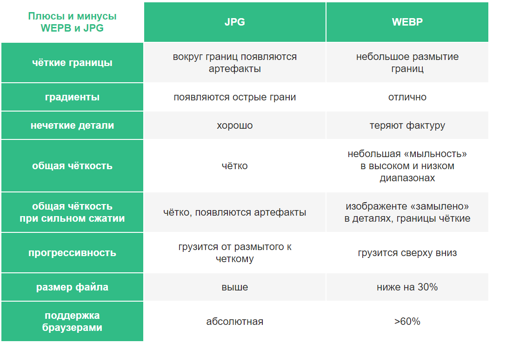

WebP — это формат файла, разработанный компанией Google в 2010 году. Его особенностью является продвинутый алгоритм сжатия, позволяющий сократить размер картинки без видимых потерь в качестве.
Формат WebP разработан компанией Google. Конвертация картинок в этот формат уменьшает их размер на 25-35% без удара по качеству изображений. К WebP применяются 2 способа сжатия — с потерями и без.
Я прочитал множество статей на похожие темы, но мне не доводилось видеть примеры в которых JPG побеждает WEBP, а ведь не всё так хорошо с WEBP. Предчувствуя косые взгляды, в качестве доказательства
я прикладываю изображения в указанных форматах.
Настоятельно рекомендую просматривать эту статью на большом экране. Все сравниваемые изображения в разных форматах примерно равны по размеру. JPG всегда слева, WEBP справа.


